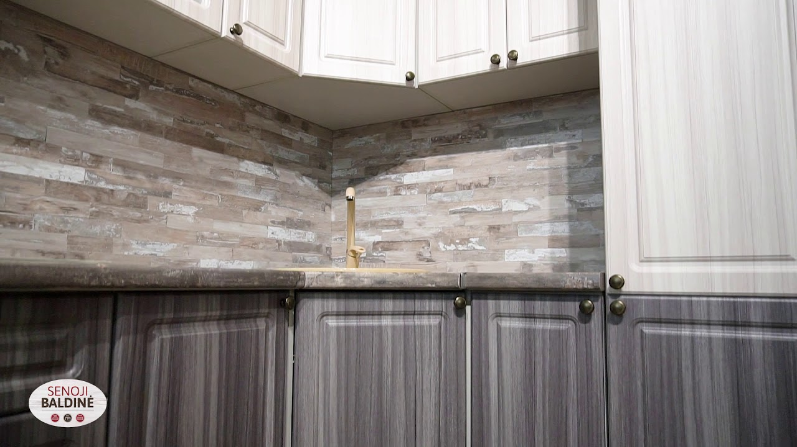

Welcome to Virtuvė
WordPress.com 504 Error
2020.10.28 08:06
Whoops!
There was a small systems error. Please try refreshing the page and if the error is still there drop us a note and let us know.


There was a small systems error. Please try refreshing the page and if the error is still there drop us a note and let us know.